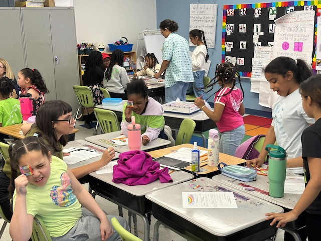

Inclusive Astronomy
I am committed to making astronomy more accessible through public engagement, centering my efforts on diversity, equity, and inclusion for early career scientists and underserved communities in STEM. Throughout the first semester of 2023, I co-created Inclusive Astronomy, an initiative that supports underrepresented students and faculty in the BU Astronomy Department by facilitating events aimed at public engagement and fostering an affinity group for self-identified minorities within the department.

KIPP Mattapan Classroom Visit, 2026
Science Train
As part of the Inclusive Astronomy initiative, I've been heavily involved in creating Science Train, a project that brings outreach directly to Bostonians on their commute by answering space-related questions on the MBTA. We hope to expand this project to other fields and bring on more scientists from the Boston area.

Snapshot of a conversation on the MBTA, May 2023.
Since September 2021, I've also been participating in the BU Observatory Open Night series, bringing the stars and planets to the general public.
Astronomy Graduate Congress
Following the dotAstro 12 conference at the CCA in NYC (October 2023), I co-founded the Astronomy Graduate Student Congress to bring together astronomy graduate students from across the United States, promoting interdepartmental discourse, shared resources and opportunities, and uncovering the hidden curriculum for early-career astronomers.